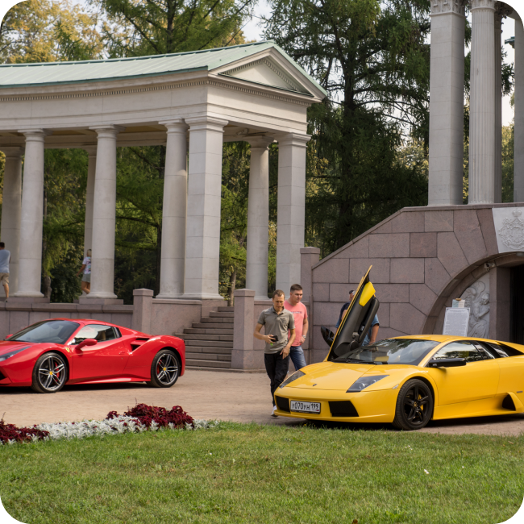
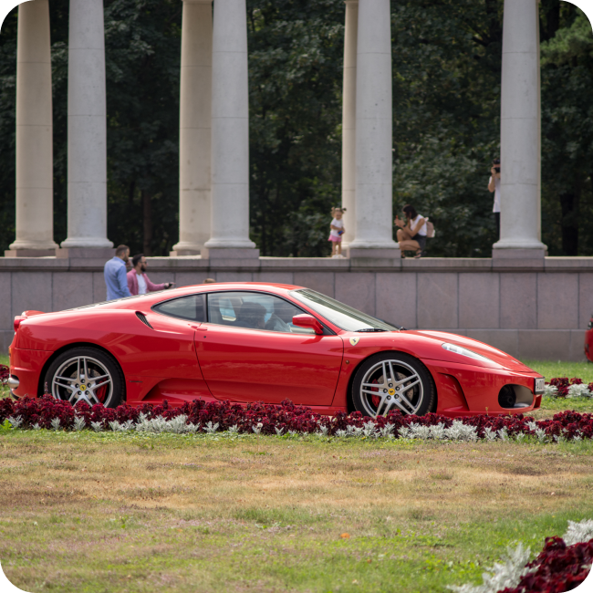
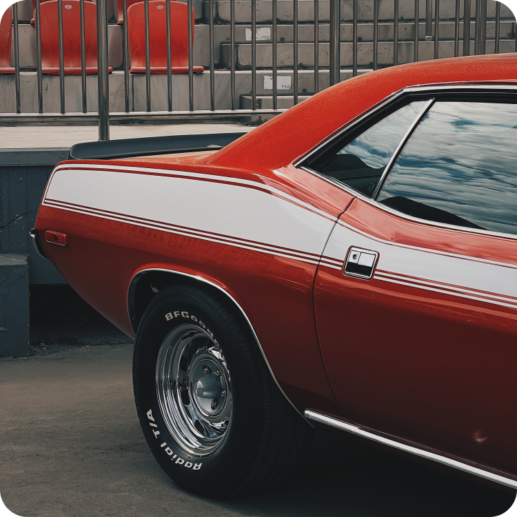
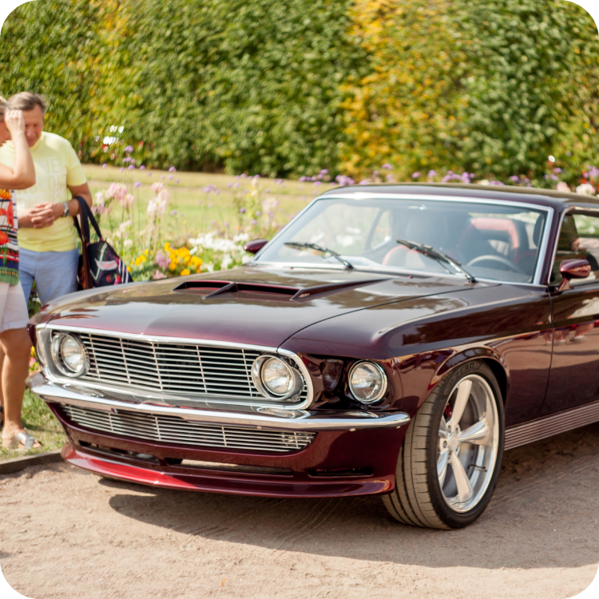
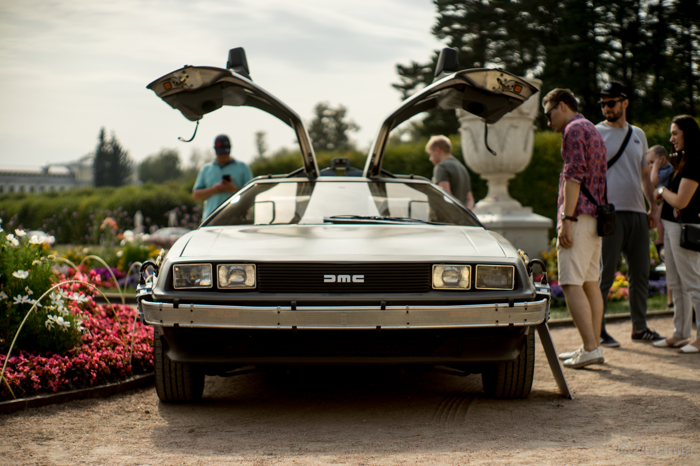

Музей-заповедник
Архангельское
Усадьба Архангельское это роскошный дворцовопарковый ансамбль, построенный в конце XVIII века. Он являлся резиденцией царской семьи Юсуповых и в наше время приобрел народное прозвище- “Подмосковный Версаль”. Заповедник состоит из множества аллей среди множества зданий и более 200 скульптур и фонтанов. Усадьба также имеет выход на набережную Москва-реки. Площадь заповедника составляет 800 га.
Автомобили
Редчайшие автомобили, произведенные за последние 20 лет, включая спорт, супер и гипер кары. Широкий спектр янгтаймеров, от легендарной японской JDM классики до угловатых итальянских суперкаров 80х и 90х годов. Разнообразные классические шедевры начиная с довоенных европейских авто, заканчивая американскими масл-карами 60х и 70х годов выпуска.


Еще фото


